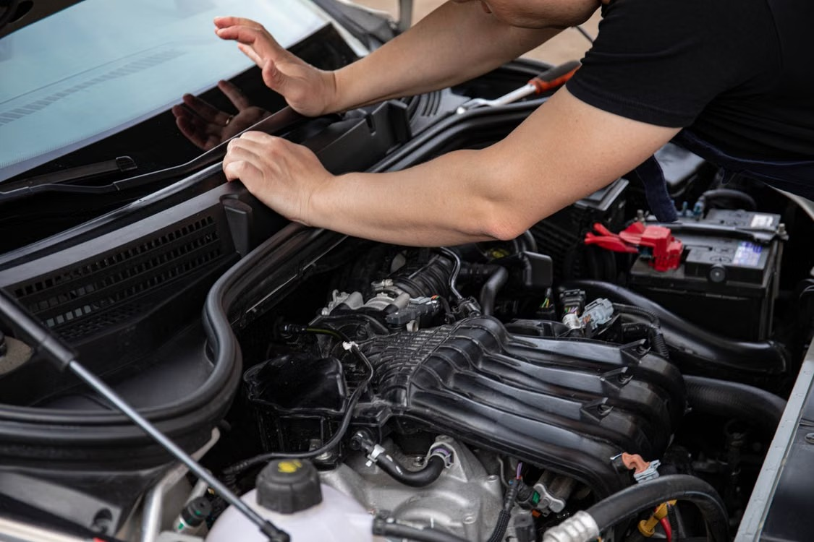
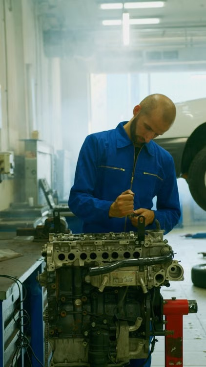

いつもの調子を、確かめる。
点検・整備の紹介例です。日常の気がかりや使用状況を聞き、どのような確認を行うかをわかりやすく案内します。


小さな違和感を聞き、状態を確かめる。
車と長く付き合うための整備を、
一つひとつ、わかりやすく伝えたい。
余白モータースは架空の整備会社です。点検や修理の内容、相談の流れが見つけやすいホームページの構成をご提案します。
ご相談の流れを見る →点検・整備の紹介例です。日常の気がかりや使用状況を聞き、どのような確認を行うかをわかりやすく案内します。
修理の紹介例です。状態の確認から作業内容の説明まで、依頼する前に知りたい情報を順番に伝えます。
写真はフリー素材によるイメージです。実際の店舗・スタッフ・作業実績ではありません。
音や動き、いつから気になっているかなど、車の状況を整理する案内です。
確認内容と必要な作業について、説明を受ける流れを掲載します。
作業や日程、費用などを確認してから依頼する流れの例です。
店舗情報の掲載イメージです。
実在する店舗ではありません。
相談する前の不安を、ひとつずつ。
お問い合わせ導線の表示例です。